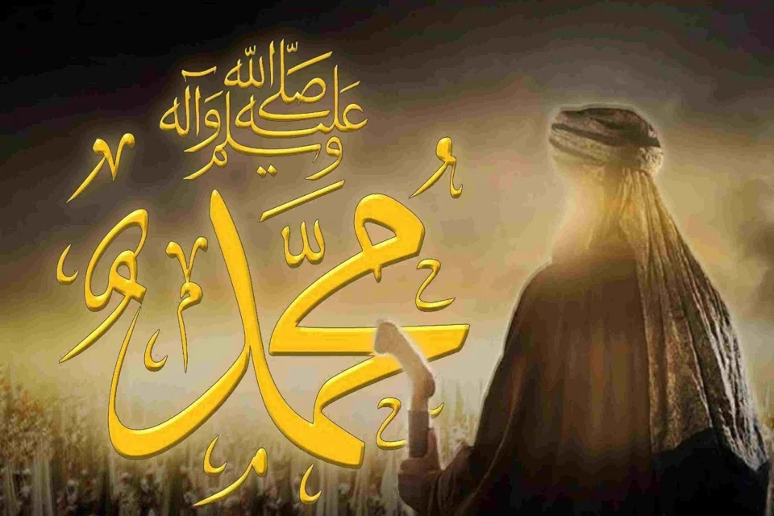

SIFAT SHOLAT NABI

Panduan Fikih Mengenai Bagian Penting dalam Shalat
Rukun shalat adalah bagian penting dari shalat. Jika rukun shalat tidak ada, shalat tidaklah sah dan tak bisa tergantikan dengan sujud sahwi.
Setelah kita mempelajari
sifat shalat nabi sampai serial ke-29
,
saat ini dan serial berikutnya akan diulas mengenai shalat dari tinjauan fikih. Kita akan pelajari rukun shalat terlebih dahulu.
Tidak dipersyaratkan niat tersebut dilafazhkan. Dalam hadits disebutkan,
إِنَّمَا الأَعْمَالُ بِالنِّيَّاتِ
“Sesungguhnya setiap amal itu tergantung dari niatnya.”
(HR. Bukhari no. 1 dan Muslim no. 1907, dari ‘Umar bin Al Khottob)
Sedangkan shalat sunnah boleh dikerjakan dalam keadaan duduk meskipun mampu.
Untuk shalat sunnah disunnahkan untuk berdiri, tidak wajib. Namun keadaan berdiri lebih utama daripada duduk saat itu. Nabi shallallahu ‘alaihi wa sallam bersabda,
مَنْ صَلَّى قَائِمًا فَهُوَ أَفْضَلُ وَمَنْ صَلَّى قَاعِدًا فَلَهُ نِصْفُ أَجْرِ القَائِمِ وَمَنْ صَلَّى نَائِمًا فَلَهُ نِصْفُ أَجْرِ القَاعِدِ
“Siapa yang mengerjakan shalat sambil berdiri, maka itu lebih afdhal. Siapa yang shalat sambil duduk akan mendapatkan pahala separuh dari shalat sambil berdiri. Siapa yang shalat sambil berbaring akan mendapat pahala separuh dari shalat sambil duduk.”
(HR. Bukhari no. 1065)
Takbiratul ihram adalah ucapan ‘Allahu Akbar’ di awal shalat.
Membaca surat Al-Fatihah bagi imam dan orang yang shalat sendirian.
Ruku’ dilakukan dengan thuma’ninah atau tidak tergesa-gesa.
Dalil yang menunjukkan perintah untuk thuma’ninah dapat dilihat pada hadits musii’ sholatuhu (orang yang jelek shalatnya).
عَنْ أَبِى هُرَيْرَةَ أَنَّ النَّبِىَّ – صلى الله عليه وسلم – دَخَلَ الْمَسْجِدَ فَدَخَلَ رَجُلٌ فَصَلَّى ثُمَّ جَاءَ فَسَلَّمَ عَلَى النَّبِىِّ – صلى الله عليه وسلم – فَرَدَّ النَّبِىُّ – صلى الله عليه وسلم – عَلَيْهِ السَّلاَمَ فَقَالَ « ارْجِعْ فَصَلِّ فَإِنَّكَ لَمْ تُصَلِّ » فَصَلَّى ، ثُمَّ جَاءَ فَسَلَّمَ عَلَى النَّبِىِّ – صلى الله عليه وسلم – فَقَالَ « ارْجِعْ فَصَلِّ فَإِنَّكَ لَمْ تُصَلِّ » . ثَلاَثًا . فَقَالَ وَالَّذِى بَعَثَكَ بِالْحَقِّ فَمَا أُحْسِنُ غَيْرَهُ فَعَلِّمْنِى . قَالَ إِذَا قُمْتَ إِلَى الصَّلاَةِ فَكَبِّرْ ، ثُمَّ اقْرَأْ مَا تَيَسَّرَ مَعَكَ مِنَ الْقُرْآنِ ، ثُمَّ ارْكَعْ حَتَّى تَطْمَئِنَّ رَاكِعًا ، ثُمَّ ارْفَعْ حَتَّى تَعْتَدِلَ قَائِمًا ، ثُمَّ اسْجُدْ حَتَّى تَطْمَئِنَّ سَاجِدًا ، ثُمَّ ارْفَعْ حَتَّى تَطْمَئِنَّ جَالِسًا ، ثُمَّ اسْجُدْ حَتَّى تَطْمَئِنَّ سَاجِدًا ، ثُمَّ افْعَلْ ذَلِكَ فِى صَلاَتِكَ كُلِّهَا
Dari Abu Hurairah, Nabi shallallahu ‘alaihi wa sallam ketika masuk masjid, maka masuklah seseorang lalu ia melaksanakan shalat. Setelah itu, ia datang dan memberi salam pada Nabi shallallahu ‘alaihi wa sallam, lalu beliau menjawab salamnya. Beliau berkata, “Ulangilah shalatmu karena sesungguhnya engkau tidaklah shalat.” Lalu ia pun shalat dan datang lalu memberi salam pada Nabi shallallahu ‘alaihi wa sallam. Beliau tetap berkata yang sama seperti sebelumnya, “Ulangilah shalatmu karena sesungguhnya engkau tidaklah shalat.” Sampai diulangi hingga tiga kali.
Orang yang jelek shalatnya tersebut berkata, “Demi yang mengutusmu membawa kebenaran, aku tidak bisa melakukan shalat sebaik dari itu. Makanya ajarilah aku!” Rasulullah shallallahu ‘alaihi wa sallam lantas mengajarinya dan bersabda,
“Jika engkau hendak shalat, maka bertakbirlah. Kemudian bacalah ayat Al Qur’an yang mudah bagimu. Lalu ruku’lah dan sertai thuma’ninah ketika ruku’. Lalu bangkitlah dan beri’tidallah sambil berdiri. Kemudian sujudlah sertai thuma’ninah ketika sujud. Kemudian bangkitlah dan duduk antara dua sujud sambil thuma’ninah. Kemudian sujud kembali sambil disertai thuma’ninah ketika sujud. Lakukan seperti itu dalam setiap shalatmu.”
(HR. Bukhari no. 793 dan Muslim no. 397)
I’tidal adalah bangkit dari ruku’ dan kembali berdiri dengan tegak disertai thuma’ninah.
Sujud dilakukan dua kali dalam satu raka’at, disertai thuma’ninah.
Duduk di antara dua sujud dilakukan dengan disertai thuma’ninah.
Duduk pada tahiyat akhir merupakan salah satu rukun dalam shalat.
Membaca bacaan tasyahud ketika duduk tahiyat akhir.
Membaca bacaan shalawat setelah bacaan tasyahud akhir.
Salam pertama minimalnya adalah ucapan ‘Assalamu ‘alaikum’, lengkapnya ‘Assalamu ‘alaikum wa rahmatullah’.
Diharuskan berurutan dalam mengerjakan rukun karena dalam hadits musii’ sholatuhu terdapat kata “tsumma” ketika menjelaskan urutan rukun. Tsumma sendiri berarti kemudian yang menunjukkan makna berurutan. Perhatikan haditsnya,
إِذَا قُمْتَ إِلَى الصَّلاَةِ فَكَبِّرْ ، ثُمَّ اقْرَأْ مَا تَيَسَّرَ مَعَكَ مِنَ الْقُرْآنِ ، ثُمَّ ارْكَعْ حَتَّى تَطْمَئِنَّ رَاكِعًا ، ثُمَّ ارْفَعْ حَتَّى تَعْتَدِلَ قَائِمًا ، ثُمَّ اسْجُدْ حَتَّى تَطْمَئِنَّ سَاجِدًا ، ثُمَّ ارْفَعْ حَتَّى تَطْمَئِنَّ جَالِسًا ، ثُمَّ اسْجُدْ حَتَّى تَطْمَئِنَّ سَاجِدًا ، ثُمَّ افْعَلْ ذَلِكَ فِى صَلاَتِكَ كُلِّهَا
“Jika engkau hendak shalat, maka bertakbirlah. Kemudian bacalah ayat Al Qur’an yang mudah bagimu. Lalu ruku’lah dan sertai thuma’ninah ketika ruku’. Lalu bangkitlah dan beri’tidallah sambil berdiri. Kemudian sujudlah sertai thuma’ninah ketika sujud. Kemudian bangkitlah dan duduk antara dua sujud sambil thuma’ninah. Kemudian sujud kembali sambil disertai thuma’ninah ketika sujud. Lakukan seperti itu dalam setiap shalatmu.”
(HR. Bukhari no. 793 dan Muslim no. 397)
Semoga bermanfaat.
Rukun Shalat
1. Niat di Dalam Hati
2. Berdiri bagi yang Mampu (untuk Shalat Wajib)
3. Takbiratul Ihram
4. Membaca Al-Fatihah
5. Ruku’ dan Thuma’ninah
6. I’tidal dan Thuma’ninah
7. Sujud Dua Kali dalam Satu Raka’at
8. Duduk di Antara Dua Sujud
9. Duduk Tahiyat Akhir
10. Membaca Bacaan Tasyahud di Tahiyat Akhir
11. Membaca Shalawat setelah Bacaan Tasyahud Akhir
12. Salam Pertama
13. Berurutan dalam Mengerjakan Rukun